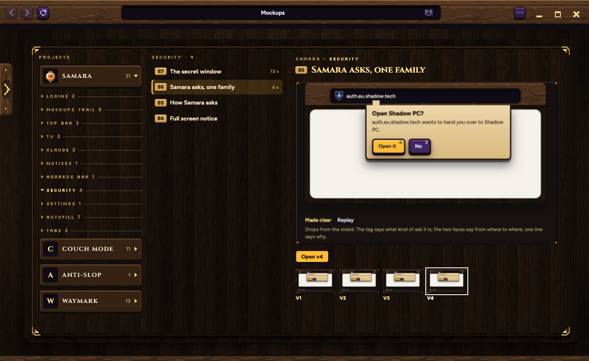
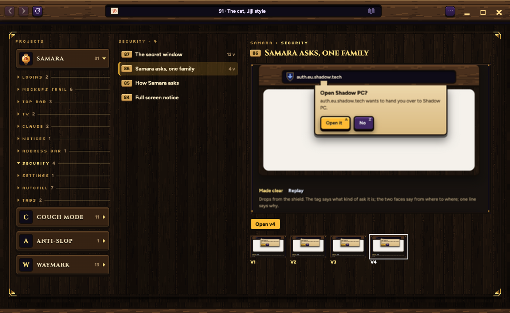
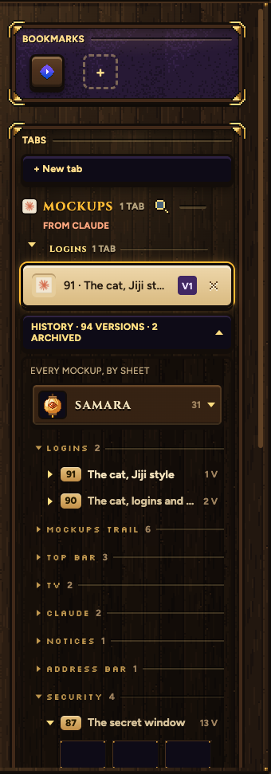

Two ways the quest log can live inside Samara's own window. Same log in both. Every picture here is Samara itself, running on a copy of your trail.
The magnifier opens it in place of your page
It takes the page's spot, and the address says Mockups. Back, or another tab, takes you out. It stays open as a tab until you close it.

The magnifier pulls the tab list open across the whole window
Your page stays where it is underneath, and the address still shows it. Move off the log and it slides back, the way the tab list does.


Project, topic, sheet, and a picture of every version
The magnifier sits on the MOCKUPS heading. A picture shows once Samara has taken it, newest sheets first. Until then the frame is empty.